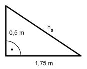

Aufgabe 233 Ein Gartenpavillon hat ein aufgesetztes quadratisches Pyramidendach mit einer Grundseite von 3,5 m und einer Höhe von 0,5 m. Wie viel m² Stoff braucht man zur Abdeckung, wenn mit 16% Verschnitt gerechnet wird? Wie schwer wird es, wenn 1 m² 180 g wiegt?  hs>² = 0,5² m² + 1,75² m² hs>² = 3,3125 m² |√ hs> = 1,82 m 3,5 m * 1,82 m AStoff = 4 * ------------------ = 12,74 m² 2 16% Verschnitt entspricht Prozentfaktor 1,16 Anötig = 1,16 * 12,74 m² = 14,8 m² 180 g = 0,18 kg m = AStoff * 0,18 kg/m² = 12,74 m² * 0,18 kg/m² = 2,29 kg